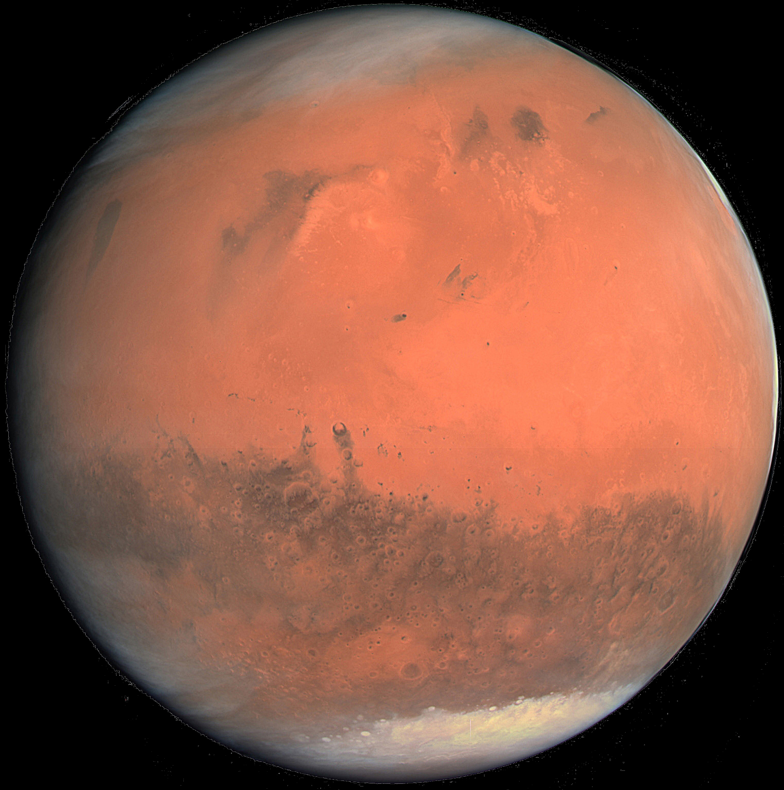

Марс
Описание
- Марс — четвёртая по удалённости от Солнца и седьмая по размерам планета Солнечной системы; масса планеты составляет 10,7 % массы Земли.
- Названа в честь Марса — древнеримского бога войны, соответствующего древнегреческому Аресу Иногда Марс называют «красной планетой» из-за красноватого оттенка поверхности, передаваемого ей минералом магнитом — γ-оксидом железа, Марс — планета земной группы с разреженной атмосферой (давление у поверхности в 160 раз меньше земного).
- Перейти к разделу Атмосфера и климат Особенностями поверхностного рельефа Марса можно считать ударные кратеры наподобие лунных, а также вулканы, долины, пустыни и полярные ледниковые шапки наподобие земных.
Назад
